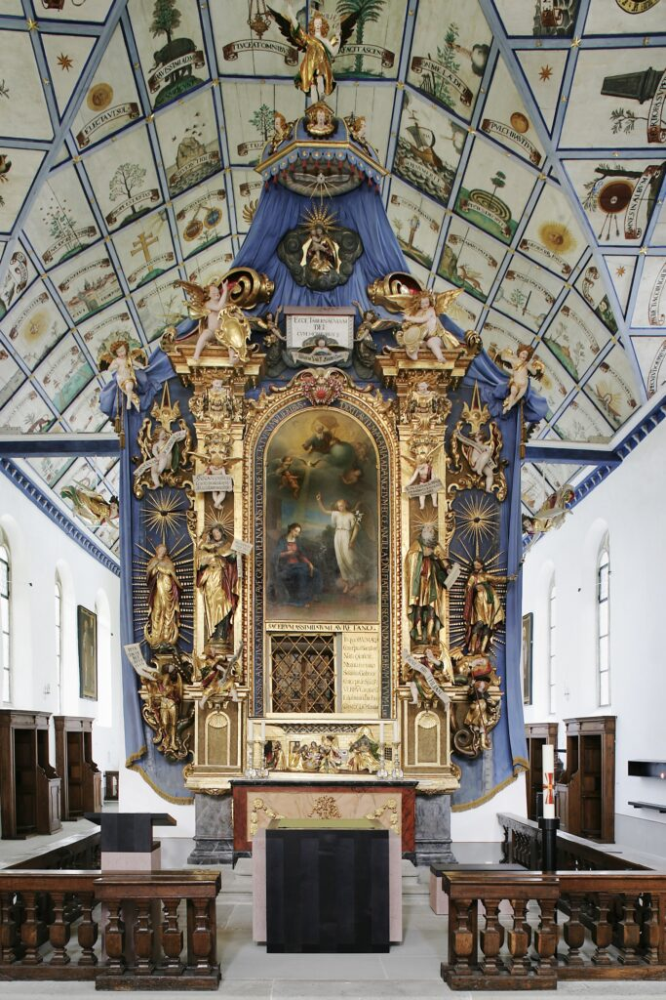
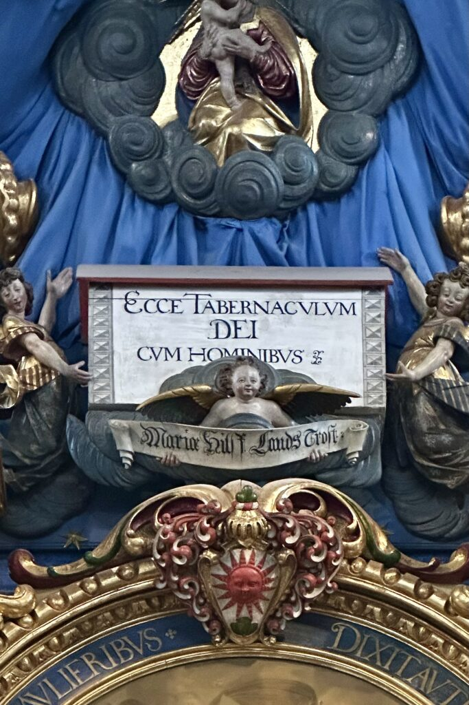
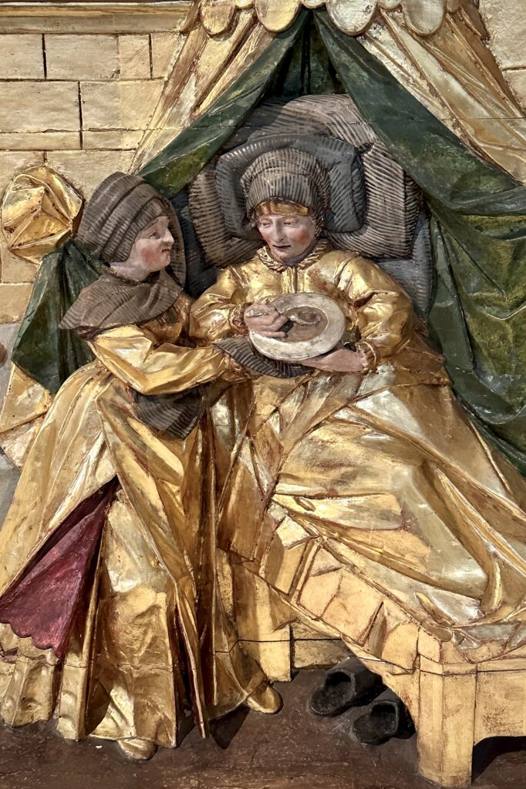
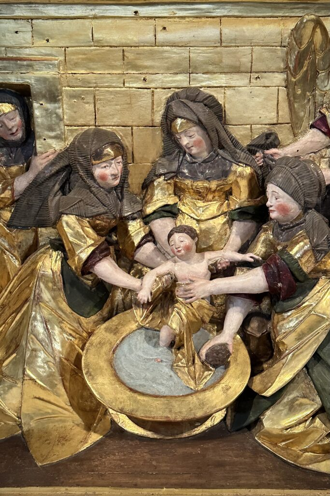
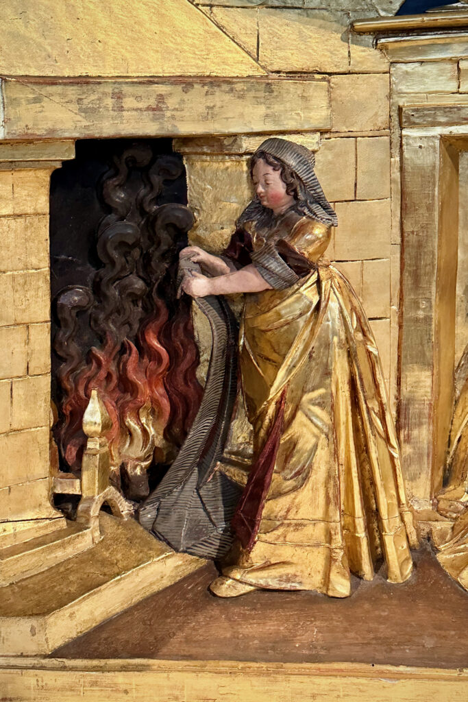
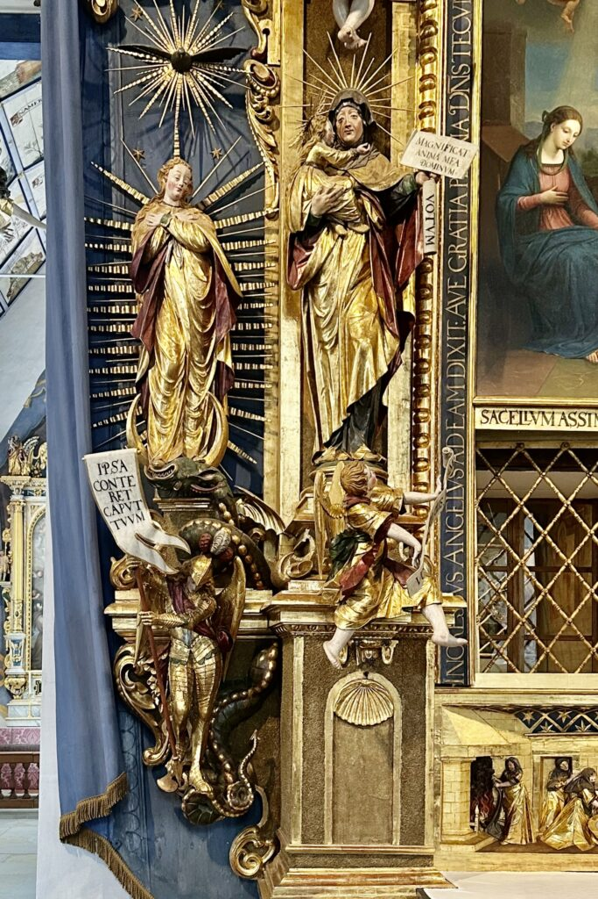
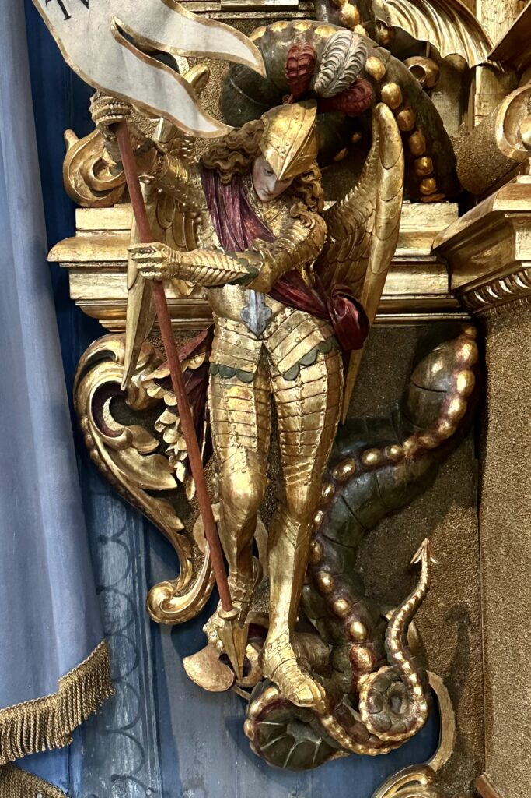

Der Hochaltar von 1652/54
An der Stirnwand der Loretokapelle befindet sich der Hochaltar mit dem „Engelsfenster”, durch das man ins Innere des verdeckten Heiligen Häuschens blicken kann.

Die Holzplastiken aus der Werkstatt Hans Ulrich Räbers sind rund um das Altarbild (1857) schwebend frei zu einem krippenhaften Ensemble gruppiert.

Thema sind Stationen des Marienlebens, darunter die Eltern Marias und ihre Geburt im Heiligen Haus von Nazareth, dessen Deckengewölbe demjenigen der Loretokapelle entspricht: Anna im Wochenbett, Frauen baden das Neugeborene, eine Helferin trocknet ein Tuch vor dem Feuer.



Am linken Rand steht Maria als Immaculata und Bezwingerin der teuflischen Schlange, assistiert vom geharnischten Erzengel Michael.

